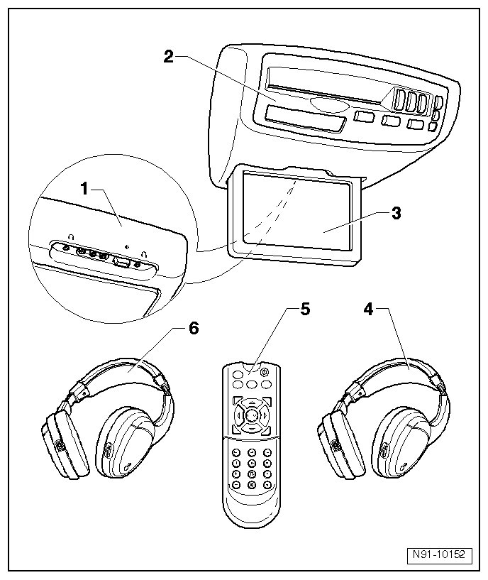

Multimedia System Overview
Multimedia System Overview

1 Additional connector sockets
• installed in multimedia system in roof console
• Connector socket assignment, refer to --> [ Auxiliary Device Connection Sockets ] Auxiliary Device Connection Sockets
2 DVD Player (R129)
• installed in multimedia system in roof console
• Multimedia system, removing and installing, refer to --> [ Multimedia System ] Multimedia System
3 Control head 1 for multimedia (Y22)
• installed in multimedia system in roof console
• Multimedia system, removing and installing, refer to --> [ Multimedia System ] Multimedia System
4 Right Multimedia Headphones (R124)
• wireless with infrared technology and volume control on headphones
• on some vehicles, wired headphones may be installed instead of wireless ones
• Battery-operated with two 1.5 volt "AAA" batteries
• Changing battery, refer to --> [ Battery in Headphones, Changing ] Service and Repair
5 Remote control
• Battery-operated with two 1.5 volt "AAA" batteries
• Changing battery, refer to --> [ Changing Batteries in Remote Control ] Changing Batteries in Remote Control (With Infrared Technology)
6 Left Multimedia Headphones (R123)
• wireless with infrared technology and volume control on headphones
• on some vehicles, wired headphones may be installed instead of wireless ones
• Battery-operated with two 1.5 volt "AAA" batteries
• Changing battery, refer to --> [ Battery in Headphones, Changing ] Service and Repair